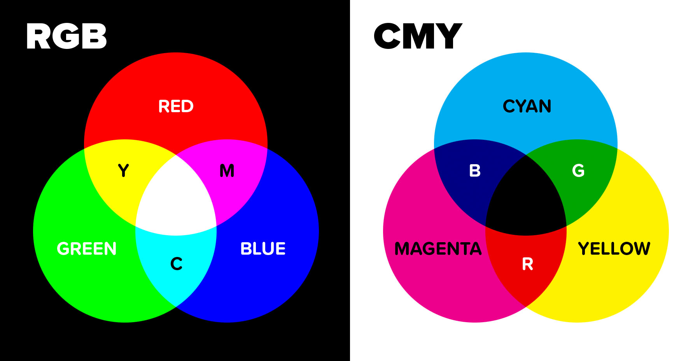

Wat zijn kleurmodellen?
In een computer worden net als dat er letters en cijfers worden gecodeerd ook kleuren gecodeerd. De camera van bepaalde aparaten zoals een telefoon bestaan uit een aantal lenzen. Achter de lenzen zit een CCD(beelsensor). De afkorting CCD komt oorspronkelijk van het woord 'charge-coupled device'. CCD bestaat uit onzettend veel fotocellen die gevoelig zijn voor het licht. Zodra er een foto wordt gemaakt, wordt het licht door sensoren omgezet door in een elektrisch signaal. Dit zorgt ervoor dat wij de afbeeldingen op onze eleketreische aparaten in verschillende kleuren kunnen zien. Er zijn twee belangrijke kleurmodellen namelijk het RGB-model en het CMY-model.
Het RGB-model
Zodra er een foto wordt gemaakt van een afbeelding op een ander aparaat dan is het zo dat als er wordt ingezoemd op de genomen foto, de foto best wazig is. Als er nog verder wordt ingezoemd zal je pixels zien met rode, blauwe en groene lampjes. Door deze gekleurde lampjes aan te passen kunnen er verschillende kleuren op het beeldscherm ontstaan. Het RGB-model staat voor Red-Green-Blue model. Om bepaalde kleuren te weergeven zorgt het RGB-model ervoor dat de kleuren: rood, groen en blauw met elkaar worden gemengd. Het RGB-model is gemaakt voor een zwarte achtergrond. Zodra het beeld uit staat, is alleen zwart te zien dus zullen de lampjes op dat moment ook niet branden. Als er kleuren op een zwarte achtergrond worden te gevoegd, kunnen er nieuwe kleuren onstaan. Wit onstaat als alle kleuren tegelijkertijd worden toegevoegd op het zwarte scherm. Om kleuren toe te voegen, zijn er bepaalde getallen nodig.

Het CMY-model
Net als dat het RGB-model wordt gebruikt om kleuren te maken op een beeldscherm, hebben we ook kleuren nodig op papier. Om kleuren te krijgen op papier die wordt uitgeprint hebben we het CMY-model. Het CMY-model staat voor Cyan-Magenta-Yellow model en is ontworpen om kleuren te kunnen weergeven op een witte achtergrond. In dit model wordt er gebruik gemaakt van drie kleuren: cyaan(soort blauw), magentha(soort roze) en yellow(geel). Op printers wordt er regelmatig gebruik gemaakt van dit kleurmodel. Soms is het zo dat er een inktpatroon is voor het printen met dit kleurmodel. Doordat dit CMY-model niet de kleur zwart kan maken, wordt dit hieraan toegevoegd. Zodra er ook zwart wordt gebruikt in dit model dan is het geen CMY-model meer maar een CMYK-model. De 'K' hieraan wordt toegevoegd staat voor het woord "KEY" dat ervoor zorgt dat er ook zwart kan ontstaan op een witte achtergrond.

Pixels
Een pixel is een gekleurd puntje op een beeldscherm van een computer of een ander digitaal beeld. Doordat er pixels zijn kunnen wij een beeld zien. Een pixel kan een willigekeurige kleur opnemen. Veel pixels bij elkaar zorgen er namelijk voor dat wij een beeld kunnen zien zien Alles wat wij op een scherm kunnen zien, zijn allemaal opgebouwde pixels. Pixels hebben niet een maat en kunnen dus groot of juist heel klein zijn. Bij een groter beeld is niet zo dat de pixels ook groter moeten zijn dan bij een kleiner beeld. De eenheid voor pixels is ppi (pixels per inch) of px/mm (pixels per millimeter).